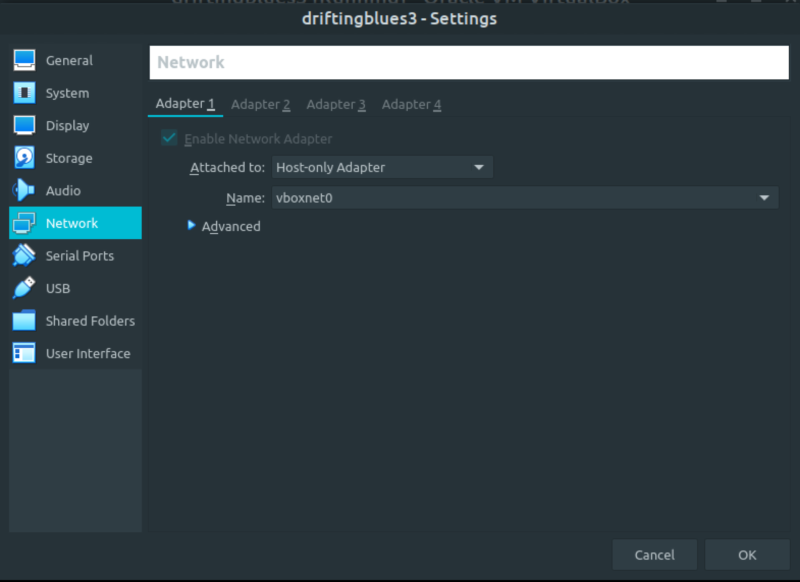
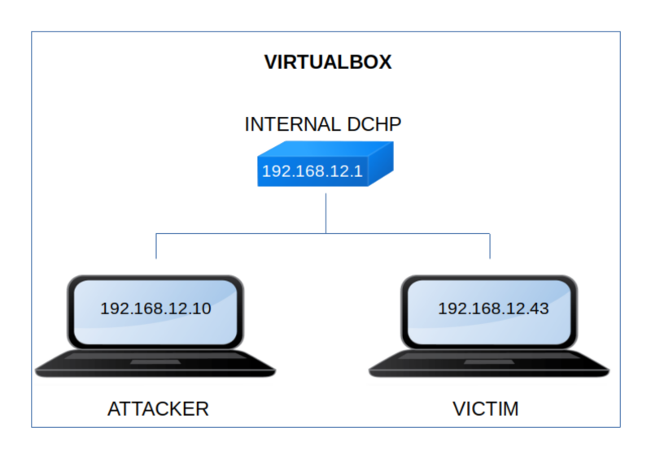

DriftingBlues 3
▸ DriftingBlues 3
▸ 1. Scan Network
▸ 2. Finding Services and Ports
▸ 3. Enumerate
▸ 3.1 Discover hidden messages
▸ 3.2 Decode message
▸ 3.3 Inject code via SSH
▸ 4. Exploitation
▸ 5.1 Create a reverse shell
▸ 5.2 Enumerate users
▸ 5.3 Create your own Public and Private key
▸ 5.4 Login via SSH (First flag)
▸ 5. Privilege Escalation
▸ 5.1 Find sudo permissions for user robertj
▸ 5.2 Create a root shell
Difficulty: Easy.
Flag: 2 flags.
Learning:
• Reconnaissance
Scan Network
Find services
• Enumerate
Discover hidden messages
Decode a base64 message
Inject code via SSH
• Exploitation
Create a reverse shell
Enumerate users
Create your own public key
Login via SSH
• Privilege Escalation
Find sudo permissions for user
Create a root shell
• Download (Mirror): https://download.vulnhub.com/driftingblues/driftingblues2.ova
• Download (Torrent): https://download.vulnhub.com/driftingblues/driftingblues2.ova.torrent
Install the machine on VirtualBox:
1. Download the file.
2. On Virtualbox choose File->Import Appliance.
3. Select the file “ova”.
4. Accept to import.


Watch your Machine IP.
$ ifconfig
Output:

Diagram
